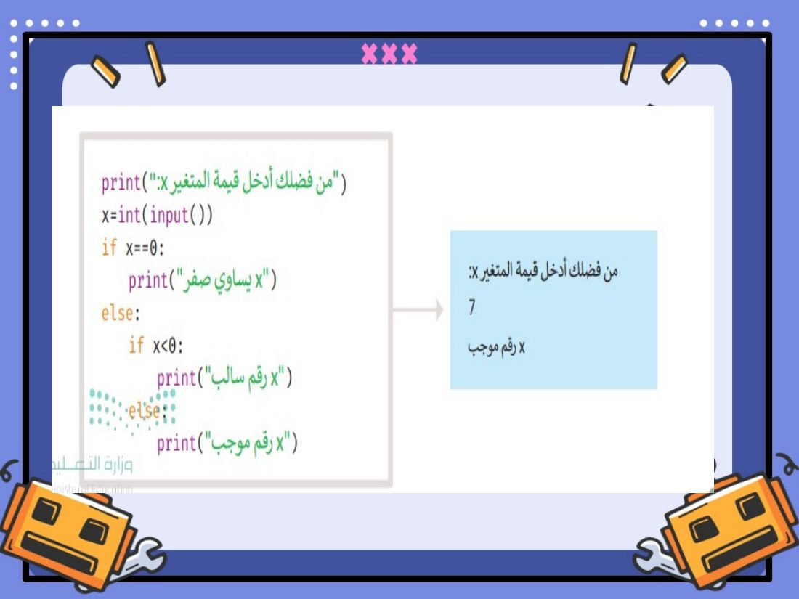
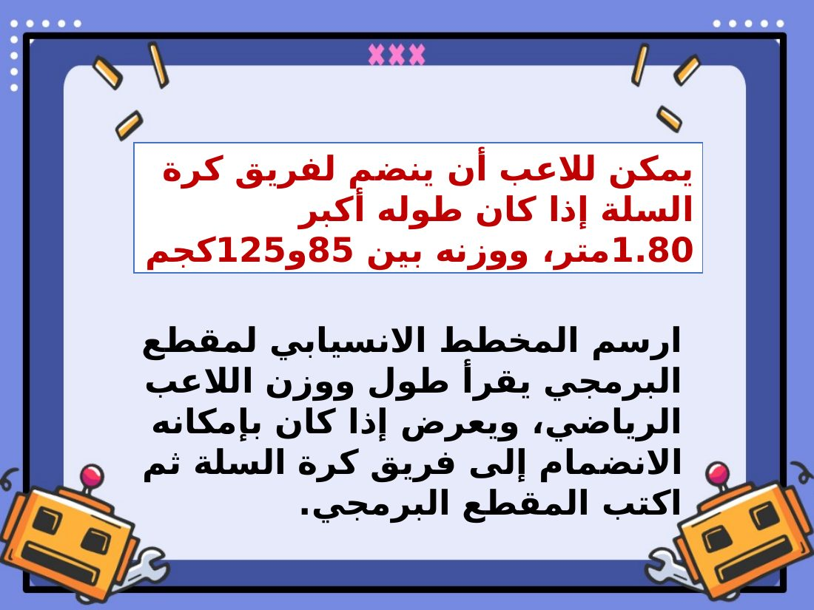
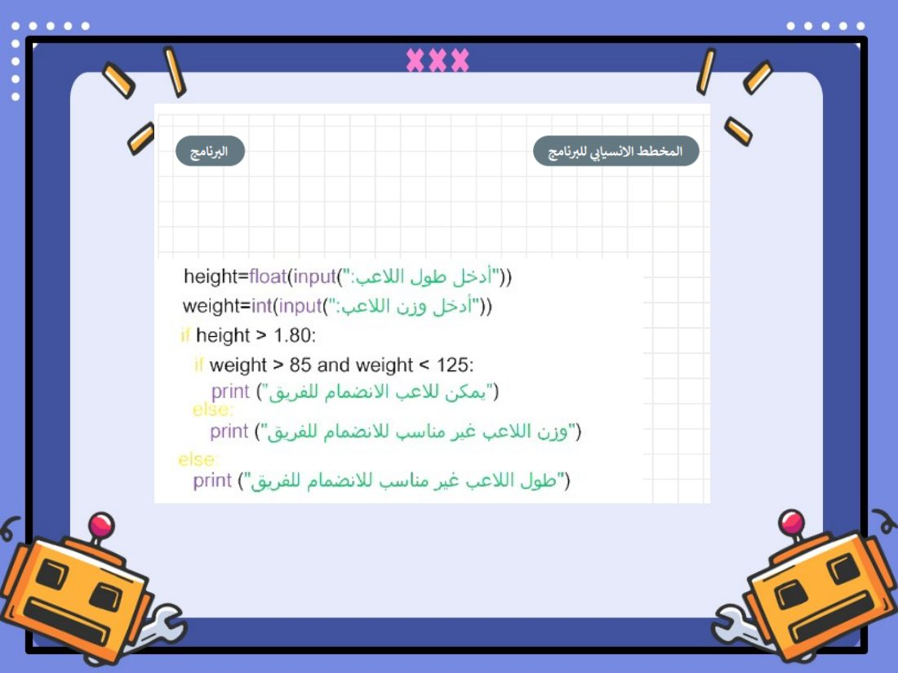

عن الحصة
شرحت المعلمة درس «الشروط المتداخلة» (الوحدة الثالثة: البرمجة مع بايثون) بالعرض التقديمي، ثم طبّقت الطالبات الأمثلة والتدريبات بكتابة المقاطع البرمجية وتشغيلها بأنفسهن على أجهزة معمل الحاسب.
شرائح من عرض الدرس
الدرس الرابع: الشروط المتداخلة.

مثال جملة if المتداخلة وناتج تشغيله.
«لنطبق معًا»: بداية التطبيق العملي في المعمل.

تدريب ٢: شروط الانضمام لفريق كرة السلة.

المقطع البرمجي لحل التدريب الذي طبّقته الطالبات.